Código
import numpy as np
import matplotlib.pyplot as plt
import sympy as spFecha: 19 de noviembre, 2026
En la primera parte de visualización aprendimos a construir gráficas con Matplotlib y Plotly. En esta segunda parte usaremos esas herramientas para estudiar curvas como en el curso de Geometría Analítica, y conoceremos Seaborn, una biblioteca para gráficas estadísticas.
Al terminar este capítulo podrás:
Los ejemplos y ejercicios están basados en la hoja Ejercicios: Curvas y Lugares Geométricos de Geometría Analítica.
import numpy as np
import matplotlib.pyplot as plt
import sympy as spLas gráficas de Matplotlib tienen, por defecto, los ejes en los bordes y escalas distintas en \(x\) y en \(y\): una circunferencia se vería como una elipse. Para geometría analítica conviene centrar los ejes en el origen y usar la misma escala. Como lo haremos muchas veces, escribimos una función (capítulo de funciones):
def plano_cartesiano(ax, limite=5):
"""Configura ax como un plano cartesiano: ejes en el origen, misma escala y cuadrícula."""
ax.spines["left"].set_position("zero") # Eje y en x = 0
ax.spines["bottom"].set_position("zero") # Eje x en y = 0
ax.spines["right"].set_visible(False)
ax.spines["top"].set_visible(False)
ax.set_xlim(-limite, limite)
ax.set_ylim(-limite, limite)
ax.set_aspect("equal") # Misma escala en ambos ejes
ax.grid(True, alpha=0.3)
return ax
fig, ax = plt.subplots(figsize=(5, 5))
plano_cartesiano(ax)
ax.set_title("Plano cartesiano")
plt.show()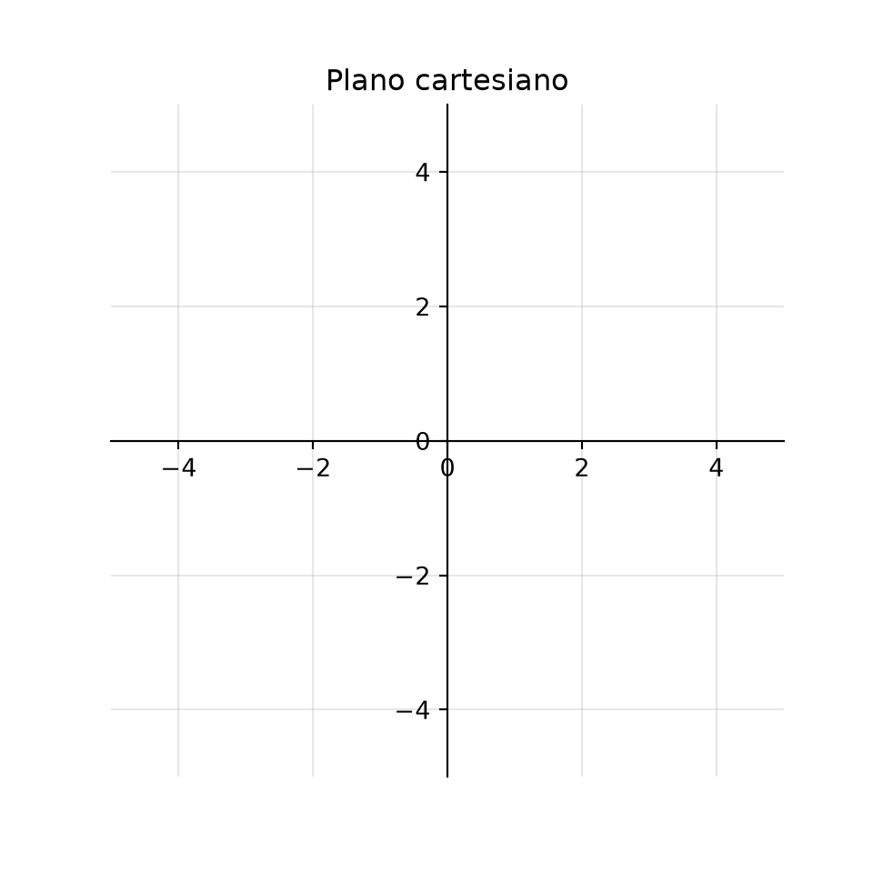
| Instrucción | ¿Qué hace? |
|---|---|
ax.spines["left"].set_position("zero") |
Mueve el eje vertical a \(x = 0\). |
ax.spines["bottom"].set_position("zero") |
Mueve el eje horizontal a \(y = 0\). |
ax.spines["right"].set_visible(False) |
Oculta el borde derecho (y lo mismo con "top"). |
ax.set_aspect("equal") |
Una unidad mide lo mismo en ambos ejes. |
| Forma | Ejemplo (circunferencia de radio 3) | ¿Cómo se grafica? |
|---|---|---|
| Explícita \(y = f(x)\) | \(y = \pm\sqrt{9 - x^2}\) (dos funciones) | ax.plot(x, f(x)) |
| Implícita \(F(x, y) = 0\) | \(x^2 + y^2 - 9 = 0\) | ax.contour(X, Y, F, levels=[0]) |
| Paramétrica \((x(t), y(t))\) | \(x = 3\cos t,\ y = 3\sin t\) | ax.plot(x(t), y(t)) |
| Polar \(r = r(\theta)\) | \(r = 3\) | x = r cos θ, y = r sin θ |
Muchas curvas de geometría analítica están dadas en forma implícita, como \(x^2 + y^2 = 9\) o \(xy = 4\), y no siempre es fácil despejar \(y\). El truco es graficar la curva de nivel 0 de \(F(x, y)\), con contour() (lo vimos en funciones de dos variables):
x = np.linspace(-5, 5, 400)
y = np.linspace(-5, 5, 400)
X, Y = np.meshgrid(x, y)
fig, ax = plt.subplots(figsize=(5, 5))
plano_cartesiano(ax)
ax.contour(X, Y, X**2 + Y**2 - 9, levels=[0], colors="tab:blue") # x² + y² = 9
ax.contour(X, Y, X * Y - 4, levels=[0], colors="tab:red") # xy = 4
ax.set_title("$x^2 + y^2 = 9$ (azul) y $xy = 4$ (rojo)")
plt.show()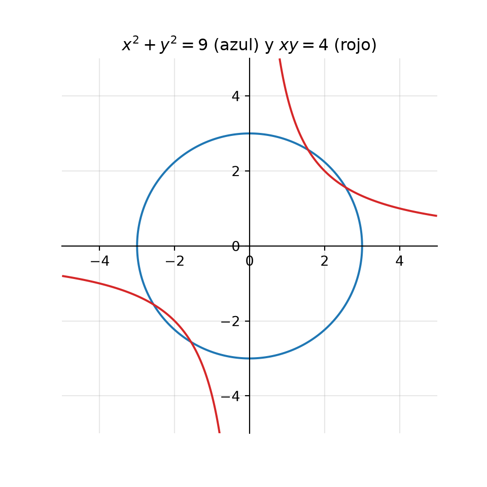
levels=[0] dibuja solo los puntos donde \(F(x, y) = 0\), es decir, la curva.
t = np.linspace(0, 2 * np.pi, 400)
fig, axs = plt.subplots(1, 2, figsize=(10, 5))
# Paramétrica: una elipse x = 4 cos t, y = 2 sin t
plano_cartesiano(axs[0])
axs[0].plot(4 * np.cos(t), 2 * np.sin(t))
axs[0].set_title("Paramétrica: $x = 4\\cos t$, $y = 2\\sin t$")
# Polar: una rosa de 4 pétalos r = 4 cos(2θ)
r = 4 * np.cos(2 * t)
plano_cartesiano(axs[1])
axs[1].plot(r * np.cos(t), r * np.sin(t), color="tab:purple")
axs[1].set_title("Polar: $r = 4\\cos(2\\theta)$")
plt.show()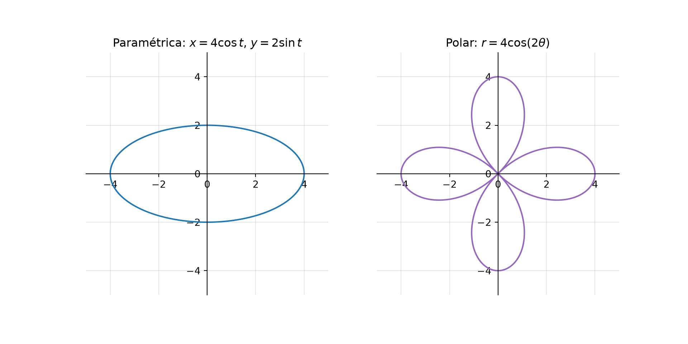
Discutir una curva es analizar sus intersecciones con los ejes, simetrías, extensión y asíntotas antes de bosquejarla. SymPy hace los cálculos y Matplotlib la gráfica. Tomemos el ejercicio 1a) de la hoja: \(xy - x - 2y = 0\).
x, y = sp.symbols("x y", real=True)
F = x*y - x - 2*y1. Intersecciones con los ejes. Con el eje \(x\) (\(y = 0\)) y con el eje \(y\) (\(x = 0\)):
print("Con el eje x:", sp.solve(F.subs(y, 0), x))Con el eje x: [0]print("Con el eje y:", sp.solve(F.subs(x, 0), y))Con el eje y: [0]La curva pasa por el origen.
2. Simetrías. Una curva \(F(x, y) = 0\) es simétrica respecto al eje \(x\) si al cambiar \(y\) por \(-y\) la ecuación no cambia; respecto al eje \(y\) si al cambiar \(x\) por \(-x\) no cambia; y respecto al origen si al cambiar ambos no cambia:
def es_simetrica(F, sustitucion):
"""Regresa True si F no cambia al aplicar la sustitución."""
return sp.expand(F.subs(sustitucion, simultaneous=True) - F) == 0
print("Eje x: ", es_simetrica(F, {y: -y}))Eje x: Falseprint("Eje y: ", es_simetrica(F, {x: -x}))Eje y: Falseprint("Origen: ", es_simetrica(F, {x: -x, y: -y}))Origen: FalseNo es simétrica respecto a los ejes ni al origen.
3. Extensión y asíntotas. Despejamos \(y\):
y_despejada = sp.solve(F, y)[0]
print("y =", y_despejada)y = x/(x - 2)print("Límite cuando x → ∞:", sp.limit(y_despejada, x, sp.oo))Límite cuando x → ∞: 1print("Límite cuando x → 2⁺:", sp.limit(y_despejada, x, 2, "+"))Límite cuando x → 2⁺: ooComo \(y = \frac{x}{x - 2}\), la curva no está definida en \(x = 2\) (asíntota vertical), y \(y \to 1\) cuando \(x \to \pm\infty\) (asíntota horizontal \(y = 1\)). Por eso la extensión es \(x \neq 2\), \(y \neq 1\).
4. La gráfica. Reunimos todo: la curva, sus asíntotas punteadas y el punto de corte con los ejes:
fig, ax = plt.subplots(figsize=(6, 6))
plano_cartesiano(ax, limite=6)
xs = np.linspace(-6, 6, 1001) # 1001 puntos: así x = 2 no está en la malla
ys = xs / (xs - 2)
ys[np.abs(xs - 2) < 0.02] = np.nan # Evita una línea falsa que una las dos ramas
ax.plot(xs, ys, color="tab:blue", label="$xy - x - 2y = 0$")
ax.axvline(2, color="gray", linestyle="--", label="Asíntota $x = 2$")
ax.axhline(1, color="gray", linestyle=":", label="Asíntota $y = 1$")
ax.scatter([0], [0], color="black", zorder=3, label="Corte con los ejes $(0, 0)$")
ax.legend(loc="lower left", fontsize=8)
plt.show()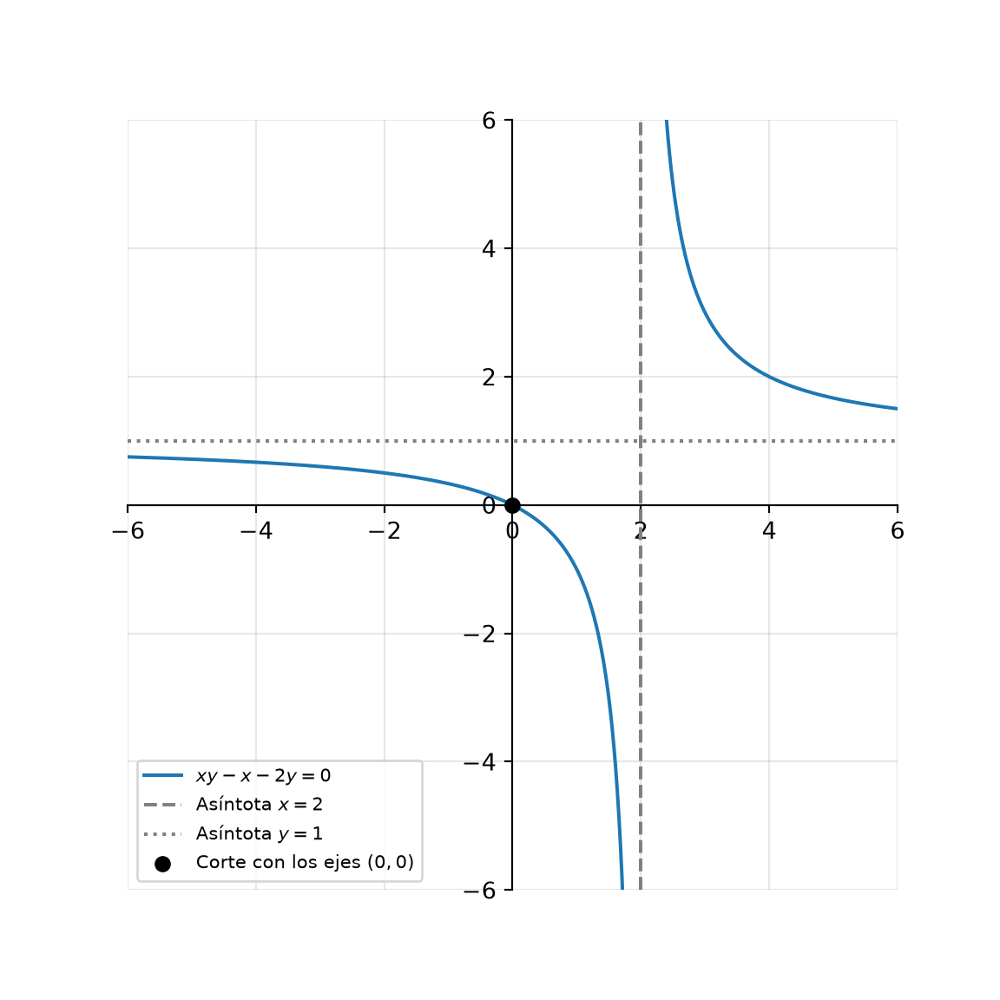
Cerca de una asíntota vertical, plt.plot() une el último punto de una rama con el primero de la otra y dibuja una línea vertical falsa. Cambiar esos valores por np.nan (“no es un número”) corta la línea.
En \(y^2 = x - 1\) (ejercicio 2a), \(y\) solo es real cuando \(x - 1 \geq 0\). SymPy encuentra ese conjunto con solveset(), y podemos sombrear en la gráfica la región donde existe la curva:
x = sp.symbols("x", real=True)
print("2a) y² = x - 1: ", sp.solveset(x - 1 >= 0, x, sp.S.Reals))2a) y² = x - 1: Interval(1, oo)print("2b) y² = x(x - 2): ", sp.solveset(x * (x - 2) >= 0, x, sp.S.Reals))2b) y² = x(x - 2): Union(Interval(-oo, 0), Interval(2, oo))X, Y = np.meshgrid(np.linspace(-4, 6, 400), np.linspace(-5, 5, 400))
fig, axs = plt.subplots(1, 2, figsize=(10, 5))
plano_cartesiano(axs[0])
axs[0].axvspan(1, 5, color="tab:green", alpha=0.15, label="$x \\geq 1$")
axs[0].contour(X, Y, Y**2 - (X - 1), levels=[0], colors="tab:green")
axs[0].set_title("2a) $y^2 = x - 1$")
axs[0].legend(loc="lower left")
plano_cartesiano(axs[1])
axs[1].axvspan(-5, 0, color="tab:orange", alpha=0.15, label="$x \\leq 0$ o $x \\geq 2$")
axs[1].axvspan(2, 5, color="tab:orange", alpha=0.15)
axs[1].contour(X, Y, Y**2 - X * (X - 2), levels=[0], colors="tab:orange")
axs[1].set_title("2b) $y^2 = x(x - 2)$")
axs[1].legend(loc="lower left")
plt.show()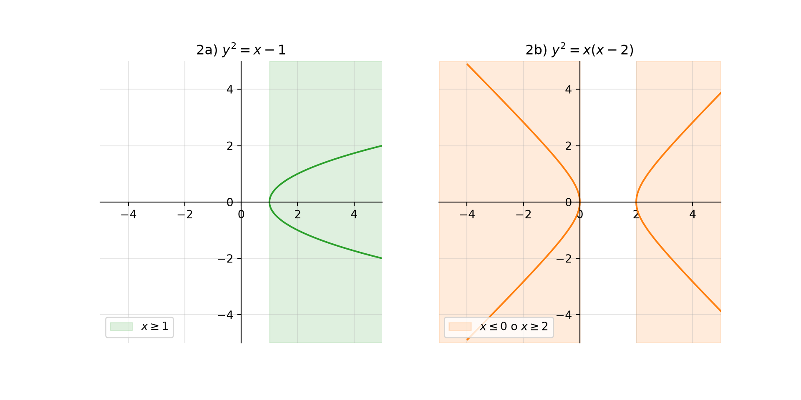
ax.axvspan(a, b) sombrea la franja vertical entre \(x = a\) y \(x = b\).
Para el ejercicio 3a), las intersecciones de \(x^2 + y^2 = 5\) y \(y = x + 1\) son las soluciones del sistema:
x, y = sp.symbols("x y", real=True)
puntos = sp.solve([x**2 + y**2 - 5, y - (x + 1)], [x, y])
print("Intersecciones:", puntos)Intersecciones: [(-2, -1), (1, 2)]X, Y = np.meshgrid(np.linspace(-4, 4, 400), np.linspace(-4, 4, 400))
fig, ax = plt.subplots(figsize=(5, 5))
plano_cartesiano(ax, limite=4)
ax.contour(X, Y, X**2 + Y**2 - 5, levels=[0], colors="tab:blue")
xs = np.linspace(-4, 4, 100)
ax.plot(xs, xs + 1, color="tab:red")
for px_, py_ in puntos:
ax.scatter(float(px_), float(py_), color="black", zorder=3)
ax.annotate(f"({px_}, {py_})", (float(px_), float(py_)), xytext=(8, -12), textcoords="offset points")
ax.set_title("$x^2 + y^2 = 5$ y $y = x + 1$")
plt.show()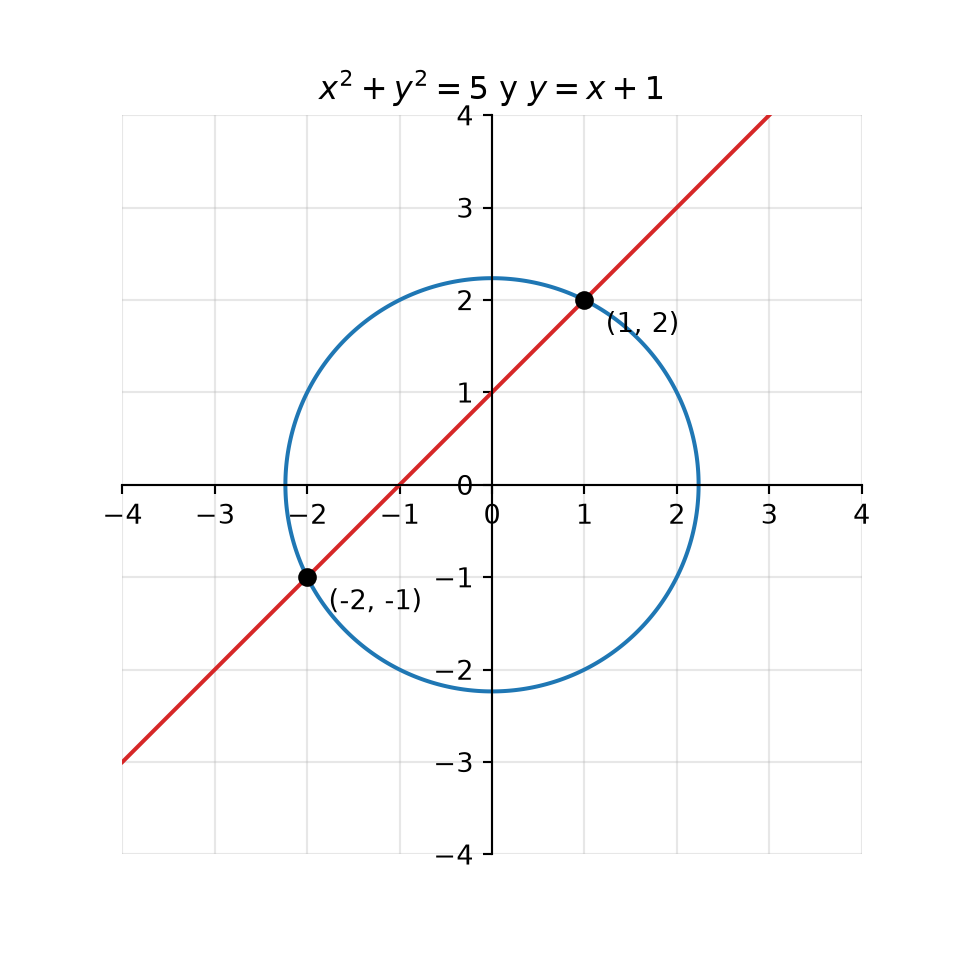
En el ejercicio 3b), sp.solve([x**2 + y**2 - 1, y - 2], [x, y]) regresa []: la recta \(y = 2\) queda fuera de la circunferencia de radio 1 y no hay intersección.
Si una ecuación se puede factorizar, su gráfica es la unión de las gráficas de cada factor, porque un producto es cero cuando alguno de sus factores es cero. Para el ejercicio 4a):
print(sp.factor(x**2 + x*y - 2*y**2))(x - y)*(x + 2*y)\(x^2 + xy - 2y^2 = (x - y)(x + 2y) = 0\) es la unión de las rectas \(y = x\) y \(y = -\frac{x}{2}\). Para el ejercicio 4b), \((x^2 + y^2 - 4)(y - x) = 0\) es la unión de una circunferencia de radio 2 y la recta \(y = x\):
X, Y = np.meshgrid(np.linspace(-4, 4, 400), np.linspace(-4, 4, 400))
fig, axs = plt.subplots(1, 2, figsize=(10, 5))
plano_cartesiano(axs[0], limite=4)
axs[0].contour(X, Y, X**2 + X * Y - 2 * Y**2, levels=[0], colors="tab:blue")
axs[0].set_title("4a) $x^2 + xy - 2y^2 = 0$")
plano_cartesiano(axs[1], limite=4)
axs[1].contour(X, Y, (X**2 + Y**2 - 4) * (Y - X), levels=[0], colors="tab:purple")
axs[1].set_title("4b) $(x^2 + y^2 - 4)(y - x) = 0$")
plt.show()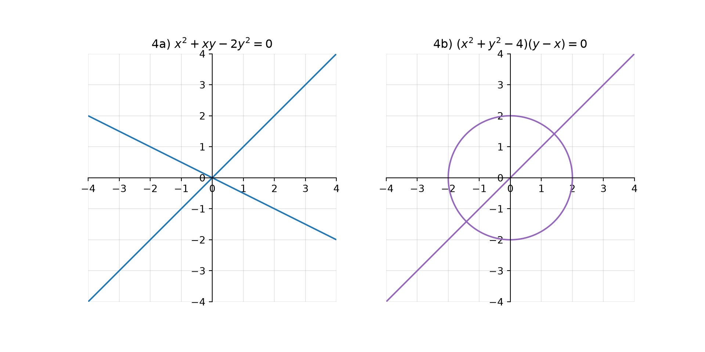
¡No necesitamos factorizar para graficar! contour() con levels=[0] dibuja directamente la unión de las curvas.
Un lugar geométrico es el conjunto de todos los puntos \(P(x, y)\) que cumplen una condición. El método siempre es el mismo:
Para no repetir la fórmula, la guardamos en una función. Usamos el cuadrado de la distancia, que no tiene raíz y es más fácil de simplificar:
def distancia2(P, Q):
"""Regresa el cuadrado de la distancia entre los puntos P y Q."""
return (P[0] - Q[0])**2 + (P[1] - Q[1])**2
x, y = sp.symbols("x y", real=True)
P = (x, y)Los puntos que equidistan de \(A = (-2, 1)\) y \(B = (4, 3)\) cumplen \(d(P, A)^2 = d(P, B)^2\):
A, B = (-2, 1), (4, 3)
ecuacion = sp.expand(distancia2(P, A) - distancia2(P, B))
print(ecuacion, "= 0")12*x + 4*y - 20 = 0print("Simplificada:", sp.factor(ecuacion), "= 0")Simplificada: 4*(3*x + y - 5) = 0La ecuación \(3x + y - 5 = 0\) es una recta: la mediatriz del segmento \(AB\), que pasa por el punto medio del segmento y es perpendicular a él.
fig, ax = plt.subplots(figsize=(5, 5))
plano_cartesiano(ax, limite=6)
xs = np.linspace(-6, 6, 100)
ax.plot(xs, 5 - 3 * xs, label="Mediatriz $3x + y - 5 = 0$")
ax.plot([A[0], B[0]], [A[1], B[1]], "k--", label="Segmento $AB$")
ax.scatter(*zip(A, B), color="black", zorder=3)
ax.scatter([1], [2], color="tab:red", zorder=3, label="Punto medio $(1, 2)$")
ax.annotate("A", A, xytext=(-14, 4), textcoords="offset points")
ax.annotate("B", B, xytext=(6, 4), textcoords="offset points")
ax.legend(loc="lower left", fontsize=8)
plt.show()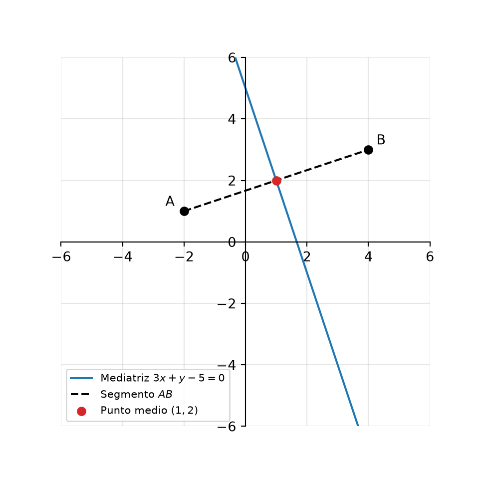
Los puntos cuya distancia al eje \(x\) (que es \(|y|\)) es igual a su distancia al punto \(F = (0, 4)\) cumplen \(y^2 = d(P, F)^2\):
F_ = (0, 4)
ecuacion = sp.expand(y**2 - distancia2(P, F_))
print(ecuacion, "= 0")-x**2 + 8*y - 16 = 0print("y =", sp.solve(ecuacion, y)[0])y = x**2/8 + 2Es la parábola \(y = \frac{x^2}{8} + 2\), con foco en \(F = (0, 4)\) y directriz el eje \(x\). Verifiquemos la propiedad con un punto cualquiera de la curva:
fig, ax = plt.subplots(figsize=(6, 5))
plano_cartesiano(ax, limite=8)
ax.set_ylim(-1, 9)
xs = np.linspace(-8, 8, 200)
ax.plot(xs, xs**2 / 8 + 2, label="$y = x^2/8 + 2$")
ax.scatter(*F_, color="tab:red", zorder=3, label="Foco $F = (0, 4)$")
ax.axhline(0, color="tab:green", linewidth=2, label="Directriz: eje $x$")
px0 = 4
py0 = px0**2 / 8 + 2 # Un punto de la parábola: (4, 4)
ax.plot([px0, F_[0]], [py0, F_[1]], "r--") # Distancia al foco
ax.plot([px0, px0], [py0, 0], "g--") # Distancia a la directriz
ax.scatter([px0], [py0], color="black", zorder=3)
ax.legend(loc="upper left", fontsize=8)
ax.set_title(f"En P = ({px0}, {py0:.0f}): distancia al foco = distancia al eje x = {py0:.0f}")
plt.show()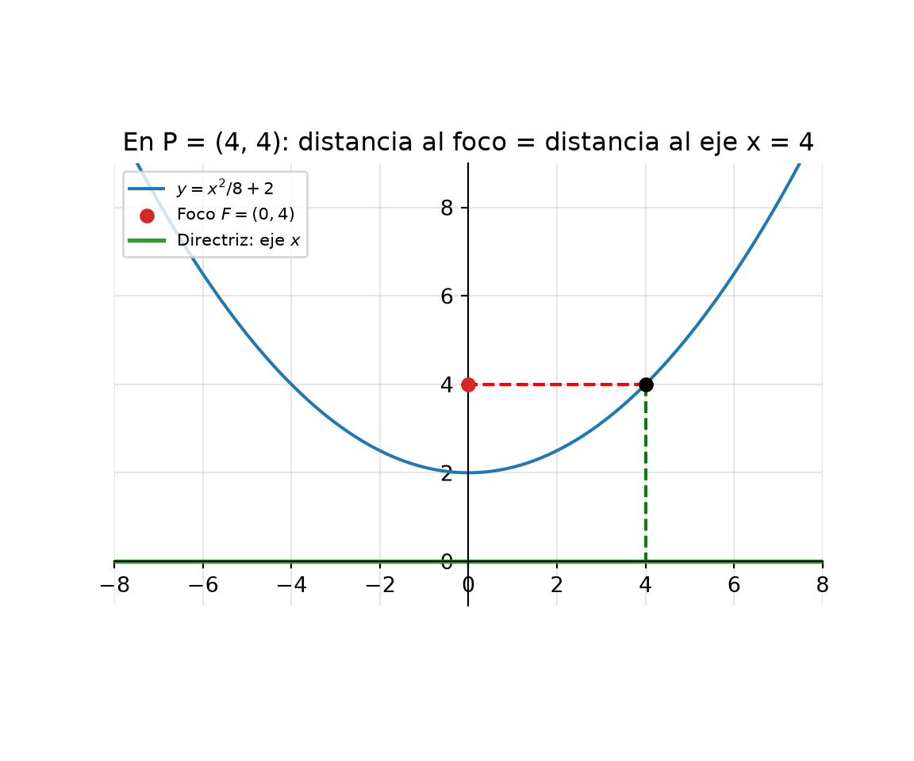
Seaborn es una biblioteca construida sobre Matplotlib para hacer gráficas estadísticas con muy poco código. Trabaja directamente con tablas de pandas (DataFrame) y elige automáticamente colores, leyendas y etiquetas.
| Matplotlib | Seaborn | |
|---|---|---|
| Nivel | Bajo: controlas cada detalle. | Alto: una función hace toda la gráfica. |
| Datos | Arreglos y listas. | Principalmente DataFrame. |
| Ideal para | Gráficas matemáticas y personalizadas. | Exploración estadística de datos. |
| ¿Se pueden combinar? | Sí: las gráficas de Seaborn son objetos de Matplotlib (ax). |
import seaborn as sns
import plotly.express as px
sns.set_theme(style="whitegrid") # Estilo general de las gráficas
iris = px.data.iris() # El conjunto iris que conocimos en la primera parte| Función de Seaborn | Gráfica |
|---|---|
sns.scatterplot() |
Dispersión, con color (hue) por grupo. |
sns.histplot() |
Histograma, opcionalmente con la curva de densidad (kde=True). |
sns.kdeplot() |
Curva de densidad (versión “suave” del histograma). |
sns.boxplot(), sns.violinplot() |
Caja y violín por grupo. |
sns.regplot() |
Dispersión con recta de regresión. |
sns.pairplot() |
Todas las gráficas de dispersión entre pares de variables. |
sns.heatmap() |
Mapa de calor de una matriz. |
fig, axs = plt.subplots(1, 2, figsize=(11, 4))
sns.histplot(data=iris, x="petal_length", hue="species", kde=True, ax=axs[0])
axs[0].set_title("Histograma con densidad")
sns.violinplot(data=iris, x="species", y="petal_length", ax=axs[1])
axs[1].set_title("Diagrama de violín")
fig.tight_layout()
plt.show()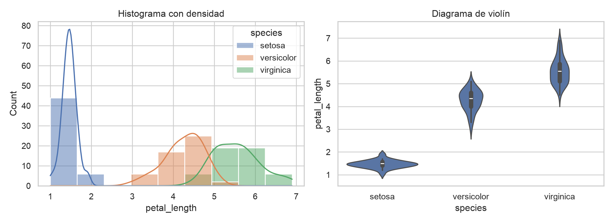
Observa el argumento ax=: así una gráfica de Seaborn se coloca en uno de los subplots de Matplotlib.
pairplot()sns.pairplot(iris.drop(columns="species_id"), hue="species", height=2)
plt.show()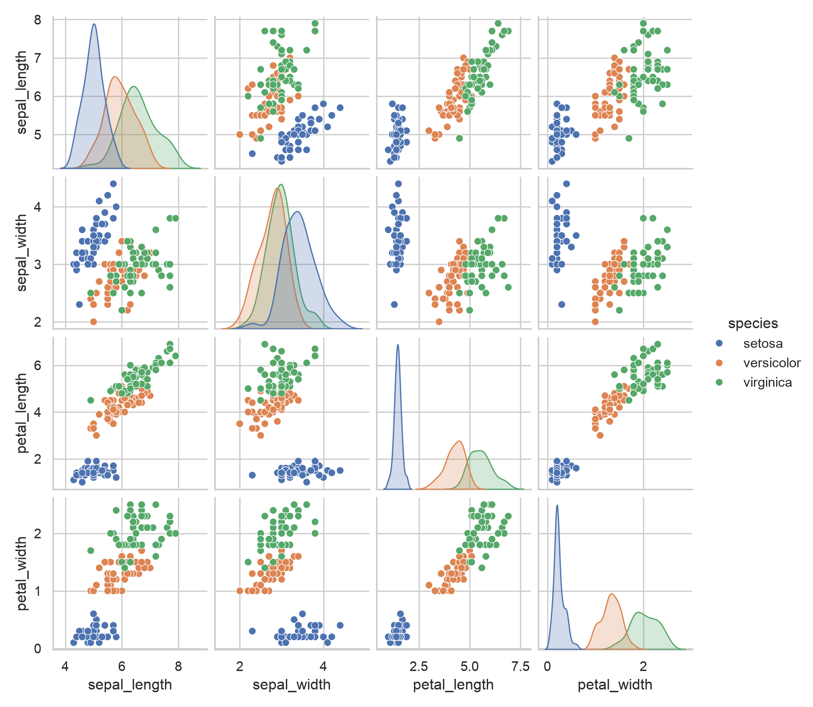
Una sola línea crea las \(4 \times 4\) combinaciones de variables. En la diagonal aparece la distribución de cada variable.
Un mapa de calor (heatmap) representa los valores de una matriz con colores. Hay tres formas principales de hacerlo:
| Función | Ideal para |
|---|---|
plt.imshow() |
Matrices grandes o imágenes; funciones \(f(x, y)\) en una malla. |
plt.pcolormesh() |
Mallas con coordenadas \(x\), \(y\) explícitas. |
sns.heatmap() |
Tablas pequeñas, con los valores escritos en cada celda (annot=True). |
La correlación mide qué tan relacionadas están dos variables, de \(-1\) a \(1\). Pandas calcula la matriz de correlación con .corr() y Seaborn la dibuja:
correlacion = iris.drop(columns=["species", "species_id"]).corr()
plt.figure(figsize=(6, 5))
sns.heatmap(correlacion, annot=True, fmt=".2f", cmap="RdBu_r", vmin=-1, vmax=1, square=True)
plt.title("Correlación entre las medidas de iris")
plt.show()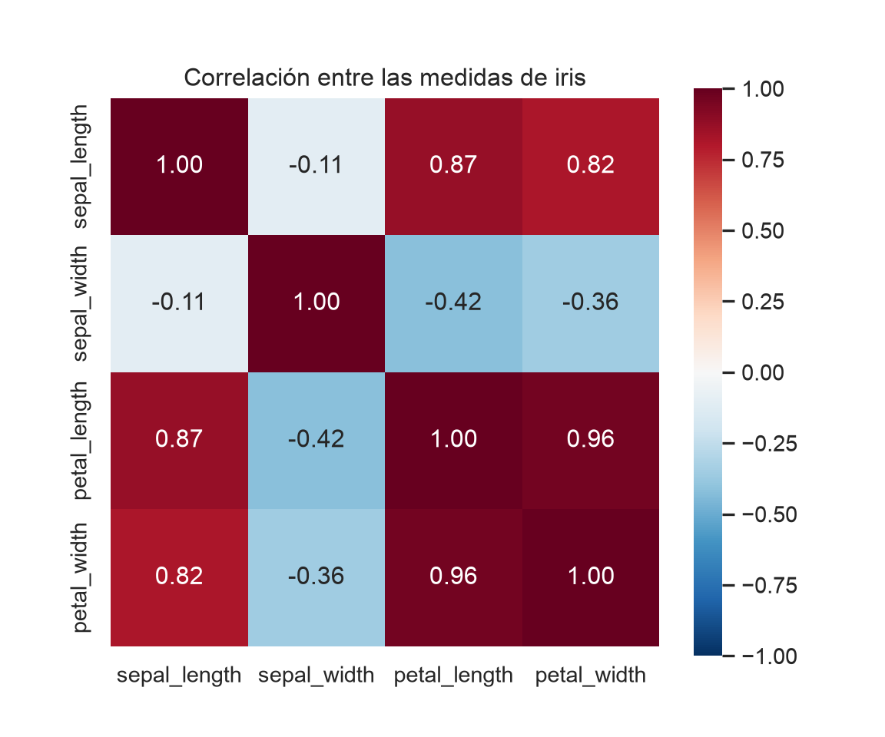
Usamos una paleta divergente (RdBu_r): azul para correlaciones negativas, rojo para positivas y blanco para cero.
| Tipo de paleta | Cuándo usarla | Ejemplos |
|---|---|---|
| Secuencial | Valores de menor a mayor. | viridis, Blues, magma |
| Divergente | Valores alrededor de un centro (como el 0). | RdBu_r, coolwarm |
| Cualitativa | Categorías sin orden. | tab10, Set2 |
Un mapa de calor también ayuda a ver un lugar geométrico. Pintemos, en cada punto del plano, la diferencia \(d(P, A) - d(P, B)\) para los puntos del ejercicio 5. La mediatriz es exactamente donde esa diferencia vale cero:
X, Y = np.meshgrid(np.linspace(-6, 6, 300), np.linspace(-6, 6, 300))
diferencia = np.sqrt((X + 2)**2 + (Y - 1)**2) - np.sqrt((X - 4)**2 + (Y - 3)**2)
fig, ax = plt.subplots(figsize=(6, 5))
malla = ax.pcolormesh(X, Y, diferencia, cmap="RdBu_r", shading="auto")
fig.colorbar(malla, label="$d(P, A) - d(P, B)$")
ax.contour(X, Y, diferencia, levels=[0], colors="black", linewidths=2)
ax.scatter([-2, 4], [1, 3], color="black", zorder=3)
ax.set_aspect("equal")
ax.set_title("La mediatriz: donde $d(P, A) = d(P, B)$")
plt.show()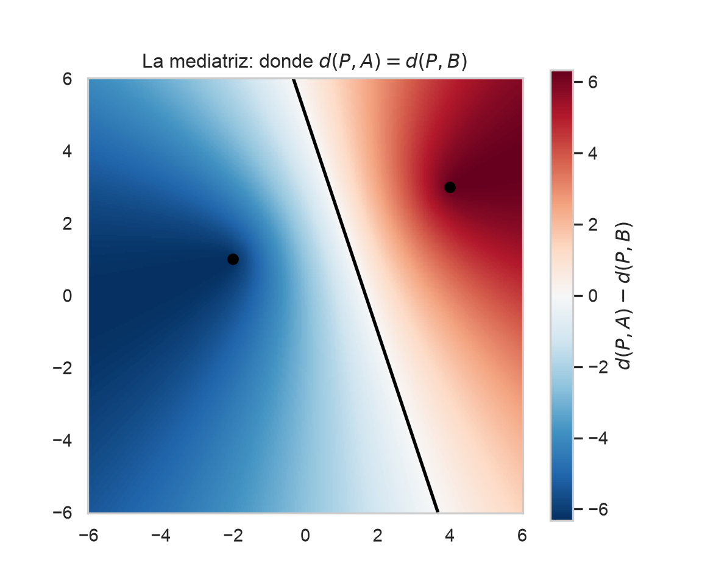
Los puntos rojos están más cerca de \(B\) y los azules más cerca de \(A\); la frontera blanca es la mediatriz.
Resuelve los ejercicios en los editores interactivos. Recuerda que lo que escribas no se guarda al recargar la página. Cada editor incluye la función plano_cartesiano() para que la uses.
es_simetrica() para averiguar si \(xy = 4\) es simétrica respecto al eje \(x\), al eje \(y\), al origen y a la recta \(y = x\) (sustitución {x: y, y: x}).contour() y sus asíntotas (los ejes).(eje_x, eje_y, origen, recta_y_x) con tus cuatro resultados.Las sustituciones son diccionarios: {y: -y}, {x: -x}, {x: -x, y: -y} y {x: y, y: x}. Para la gráfica, la función en la malla es X * Y - 4.
eje_x = es_simetrica(F, {y: -y}) # False
eje_y = es_simetrica(F, {x: -x}) # False
origen = es_simetrica(F, {x: -x, y: -y}) # True
recta_y_x = es_simetrica(F, {x: y, y: x}) # True
X, Y = np.meshgrid(np.linspace(-5, 5, 400), np.linspace(-5, 5, 400))
fig, ax = plt.subplots(figsize=(5, 5))
plano_cartesiano(ax)
ax.contour(X, Y, X * Y - 4, levels=[0], colors="tab:red")
ax.set_title("xy = 4")
plt.show()
(eje_x, eje_y, origen, recta_y_x)Las asíntotas son los propios ejes: cuando \(x \to \infty\), \(y = 4/x \to 0\).
Encuentra con SymPy las intersecciones de la circunferencia \(x^2 + y^2 = 25\) y la recta \(x + y = 7\). Grafica ambas curvas y marca los puntos. Deja la lista de puntos en la última línea.
sp.solve() supone que cada expresión está igualada a cero: escribe x**2 + y**2 - 25 y x + y - 7.
puntos = sp.solve([x**2 + y**2 - 25, x + y - 7], [x, y])
print(puntos) # [(3, 4), (4, 3)]Obtén la ecuación del lugar geométrico de los puntos \(P(x, y)\) que equidistan de \(A(1, -2)\) y \(B(5, 4)\). Grafícalo junto con los puntos \(A\) y \(B\). Deja la ecuación simplificada (la expresión igualada a cero) en la última línea.
La condición \(d(P, A) = d(P, B)\) es equivalente a \(d(P, A)^2 - d(P, B)^2 = 0\): escribe distancia2(P, A) - distancia2(P, B).
ecuacion = sp.expand(distancia2(P, A) - distancia2(P, B))
print(sp.factor(ecuacion), "= 0") # 4*(2*x + 3*y - 9) = 0
ecuacionEs la recta \(2x + 3y - 9 = 0\), la mediatriz del segmento \(AB\), igual que en el ejemplo del ejercicio 5.
El cuadrado de la distancia de \(P(x, y)\) a \(A(4, 1)\) es igual a su distancia al eje \(Y\), que es \(|x|\). Para los puntos con \(x \geq 0\), la condición es \(d(P, A)^2 = x\).
contour().(cx, cy) en la última línea.El sistema es la derivada respecto a x y la derivada respecto a y: sp.diff(ecuacion, y).
centro = sp.solve([sp.diff(ecuacion, x), sp.diff(ecuacion, y)], [x, y])
cx, cy = centro[x], centro[y]
radio = sp.sqrt(-ecuacion.subs({x: cx, y: cy}))
print("Centro:", (cx, cy), " Radio:", radio) # Centro: (9/2, 1) Radio: sqrt(17)/2La ecuación \(x^2 - 9x + y^2 - 2y + 17 = 0\) es equivalente a \(\left(x - \frac{9}{2}\right)^2 + (y - 1)^2 = \frac{17}{4}\). Todos sus puntos tienen \(x > 0\), así que el caso \(x < 0\) no aporta puntos.
Los puntos cuya suma de distancias a \(A(3, 0)\) y \(B(-3, 0)\) es 8 forman una elipse con focos \(A\) y \(B\). Si clavas dos estacas en los focos, atas una cuerda de longitud 8 y la mantienes tensa con un lápiz, ¡dibujas esta elipse!
Para una elipse con centro en el origen: el semieje mayor es \(a = \frac{8}{2}\), la distancia del centro a cada foco es \(c = 3\) y el semieje menor cumple \(b^2 = a^2 - c^2\).
a, c y b.contour() y compárala con la paramétrica \(x = a\cos t\), \(y = b\sin t\).(a, b**2, c) en la última línea.a = 8 / 2, c = 3 y b = (a**2 - c**2) ** 0.5.
a = 8 / 2 # 4.0
c = 3
b = (a**2 - c**2) ** 0.5 # √7 ≈ 2.6458La ecuación es \(\frac{x^2}{16} + \frac{y^2}{7} = 1\). La curva de nivel (gruesa) y la paramétrica (punteada) coinciden.
Construye la tabla de multiplicar módulo 7: la entrada \((i, j)\) es \(i \cdot j \bmod 7\), para \(i, j = 0, 1, \dots, 6\). Usa broadcasting de NumPy (sin ciclos) y dibuja la tabla con sns.heatmap(). ¿Qué patrón observas en las filas?
Con broadcasting, i * j produce una matriz de \(7 \times 7\). Después aplica % n.
tabla = (i * j) % nExtra: cambia n = 7 por n = 8. Como 8 no es primo, algunas filas ya no contienen todos los números.
Discute la curva \(y^2 = x(x - 2)\) (ejercicio 2b) en un solo programa:
(cortes_eje_x, simetrica_eje_x) con la lista de cortes con el eje \(x\) ordenada y si es simétrica respecto al eje \(x\).Para la simetría respecto al eje \(x\): sp.expand(F.subs(y, -y) - F) == 0. La condición de existencia es que el lado derecho no sea negativo: x*(x - 2) >= 0.
simetrica_eje_x = sp.expand(F.subs(y, -y) - F) == 0 # True
simetrica_eje_y = sp.expand(F.subs(x, -x) - F) == 0 # False
existencia = sp.solveset(x*(x - 2) >= 0, x, sp.S.Reals) # (-oo, 0] ∪ [2, oo)Completando el cuadrado, \(y^2 = x^2 - 2x\) es \((x - 1)^2 - y^2 = 1\): una hipérbola con centro en \((1, 0)\).
| Tema | Herramienta |
|---|---|
| Plano cartesiano | ax.spines[...].set_position("zero") y ax.set_aspect("equal") |
| Curvas implícitas | ax.contour(X, Y, F, levels=[0]) |
| Paramétricas y polares | ax.plot(x(t), y(t)), con x = r cos θ, y = r sin θ |
| Discutir una curva | SymPy: solve (cortes), subs (simetrías), limit (asíntotas), solveset (extensión) |
| Asíntotas | ax.axvline(), ax.axhline() y np.nan para cortar la línea |
| Regiones | ax.axvspan() |
| Lugares geométricos | Distancia al cuadrado + sp.expand() / sp.factor() + gráfica |
| Seaborn | histplot, violinplot, pairplot, heatmap, con hue y ax= |
| Mapas de calor 2D | imshow, pcolormesh, sns.heatmap; paletas secuenciales, divergentes y cualitativas |
contour